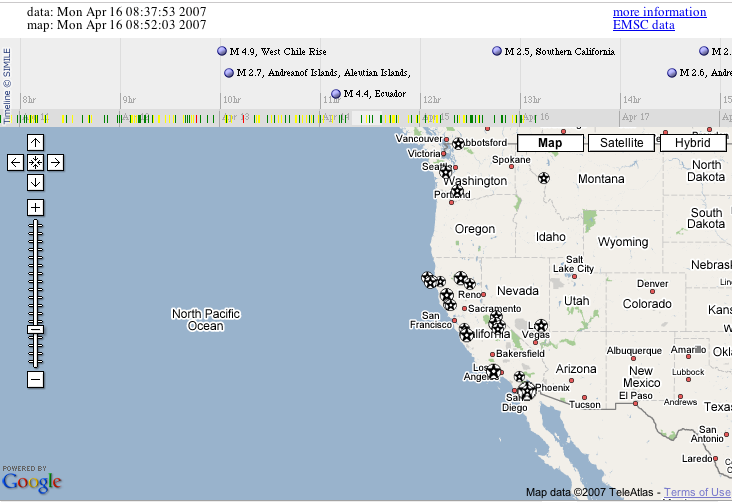

After a week away from the web (:-) I thought I'd have a quick play with some new 'visualisations' of geo-coded RSS feeds using Yahoo and Google maps presented in the same browser view as a timeline of the associated feed, in part prompted by some of Martin Weller's sideways reflections on using Google maps in education.
The demo app I had in mind was to show a simple travel blog with dual visualisations - mapped and timelined using split screen iframes, the timeline in the top third, the map in the bottom two thirds - BUT I couldn't find a geo-coded, timestamped feed that would work in the timeline and mapping apps...
So until I manage to cobble my own demo feed together (which won't actually take that long to do, but you know how it goes...!), here's what I have in mind:
Given a geo-coded RSS feed, visualise it using either the Yahoo geoRSS2map API or the Google geoRSS2map API (the ACME GeoRSS Map Viewer will generate map links for both of these services when passed a GeoRSS URL).
Using the same feed, visualise it temporally using the Simile timeline widget via something like the Universal [RSS to] Timeline Generator or this customisable service from My Timelines (who also have an experimental iCal feed to timeline generator). These services actually use the timestamp of each feed item to locate the item title along the timeline (I think), which is why I thought of using a travel blog for the demo - my assumptions about travelblog postings being that they are posted at or near the time of event recorded as well as being appropriately geotagged.
Several opportunities for tying the geo and temporal interfaces together also suggest themselves.
For example, if items on the displayed timeline are colour coded along a red/blue spectrum, say, along the timeline, then corresponding map markers could be similarly color coded, giving you on the map a 2+1D representation (space + time), with a cross reference back to the timeline.
The Yahoo map interface is interesting in that only text links to items in the current geo view are listed (allowing you to navigate items by the map view). A similar control could be added to the timeline so that only items in the current timeline view are displayed on the currently displayed displayed map. (With maybe options for only displaying in the timeline items on the current geo view - and various combinations thereof).
Hovering over items on the map/timeline might also cause the corresponding item on the timeline/map to be highlighted.
Using these tools in combination with each other thus offers the potential for a powerful visual interface using historical and/or spatial context.
What's really needed then, of course, would be a third window (or pop-up window, maybe in a lightbox?) to display the description text for a particular feed item when it is selected either from the map or the timeline.
On the to do list is a Yahoo pipe that will take a geotagged social bookmarking feeds (using the geo:lat=* geo:long=*) strategy, and produce a valid geoRSS feed as a result. In addition, the Pipe should also be able to handle a datetime=* tag applied to each bookmark and then rewrite the feed item timestamp with this time... So for example I could datetime= or dt= tag an article relating to an English Civil War battle with the date of the battle, have the feed rewritten with this datetime as the item posting time, and then have the feed items displayed appropriately on a timeline (unless the timeline widget could consume a datetime tag directly, that is).
It's maybe also worth mentioning that the Microsoft Windows Live empire also has various forms of GeoRSS support, as this post on Live Search Maps describes.
In particular, the Microsoft service lets you 'bookmark' collections of locations (a bit like the new Google MyMaps service, I guess), and publish a public, geoRSS feed from these collections. (Note that this is a take home point: Windows Live Search maps lets you create location collections with geoRSS feeds).
As far as consuming geoRSS, the Virtual Earth Map Control is happy with this sort of input, but I think it only works on a Windows O/S with 3D support (i.e. not on Windows under Parallels on a Mac...).
PS Okay - so someone has sort of done this before: the USGS Live Earthquake mashup:

This approach (timeline+maps) seems to me like a powerful strategy for collecting resources whilst researching an essay topic, for example, with the added advantages that: a) the visualisation may help structure/organise the essay; b) used to illustrate the topic and maybe even provide a visual navigation scheme through it...
Posted by ajh59 at April 15, 2007 01:54 PM